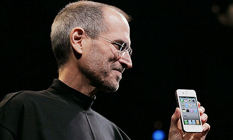

Timeline
Date |
Event |
|---|---|
| 1955 | Steven Paul was born in San Francisco, the son of Abdulfattah Jandali and Joanne Schieble. He is quickly adopted by Paul and Clara Jobs |
| 1969 | Steve Jobs meets Steve Wozniak, 5 years older, through a mutual friend. Woz and Steve share a love of electronics, Bob Dylan, and pranks |
| 1976 | Woz and Steve show the early Apple I board at the Homebrew Computer Club |
| 1976 | Steve Jobs and Woz show off the Apple I at the Personal Computing Festival in Atlantic City, with help from Dan Kottke |
| 1978 | At Apple, work starts on the Apple III and the Lisa, while Jef Raskin begins The Book of Macintosh |
| 1980 | Apple launches the Apple III, which will prove a disastrous flop |
| 1983 | Launch of the Lisa computer. The Lisa team later merges with the Mac team under Steve Jobs's leadership |
| 1983 | PepsiCo CEO John Sculley becomes Apple's CEO after having been wooed by Steve Jobs for several months |
| 1985 | Steve Jobs resigns from Apple and starts NeXT with five other refugees from Apple. Apple announces it will sue NeXT |
| 1996 | Apple, which was desperately looking for a modern operating system to buy, eventually buys NeXT for $400 million. Steve Jobs is named "informal adviser" to Apple CEO Gil Amelio |
| 1999 | Introduction of the iMac DVs and of iMovie, the first of Apple's first Digital Hub app |
| 2011 | Steve Jobs dies at home, surrounded by his family |
In A NutShell
| Born |
Steven Paul Jobs February 24, 1955 San Francisco, California, U.S. |
|---|---|
| Died | October 5, 2011 (aged 56) Palo Alto, California, U.S. |
| Occupation | Co-founder, Chairman, and CEO of Apple Inc. Primary investor and CEO of Pixar Founder and CEO of NeXT |
| Parents | Paul Jobs (adoptive father) Clara Jobs (adoptive mother) Abdulfattah Jandali (biological father) Joanne Schieble Simpson (biological mother) |